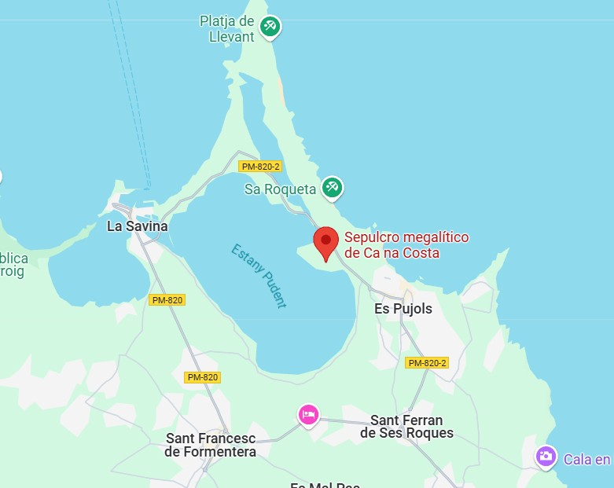

Descripció
Monument funerari del 2000 a.C. amb una estructura circular, considerat el més antic de les Balears.
Ubicació
El Sepulcre megalític de Ca Na Costa és a la zona de ponent de l'illa de Formentera, entre els nuclis urbans de la Savina i es Pujols i vora la costa de llevant de l'Estany Pudent

Imatges